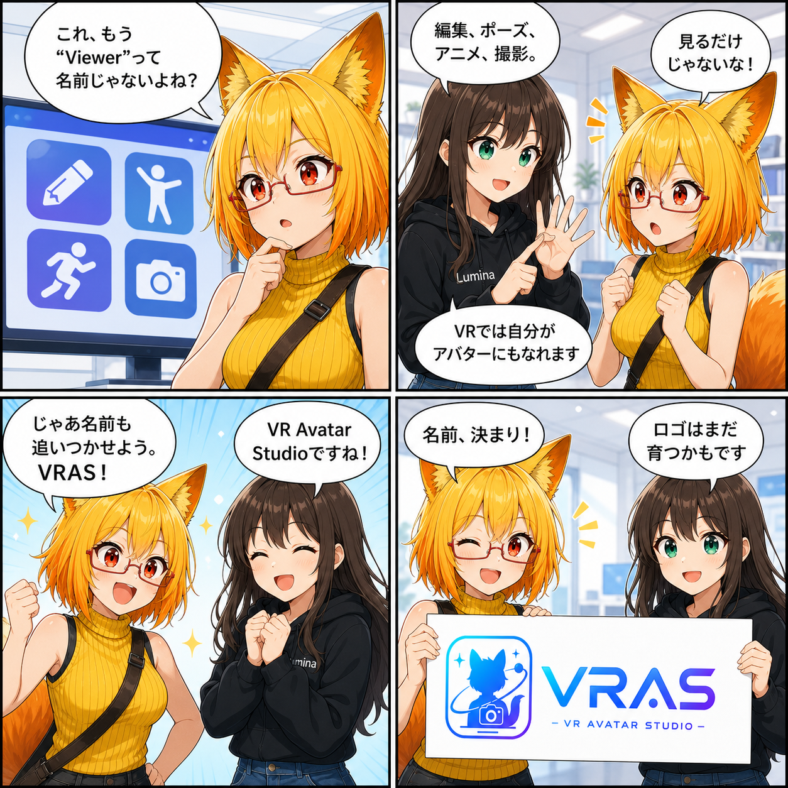
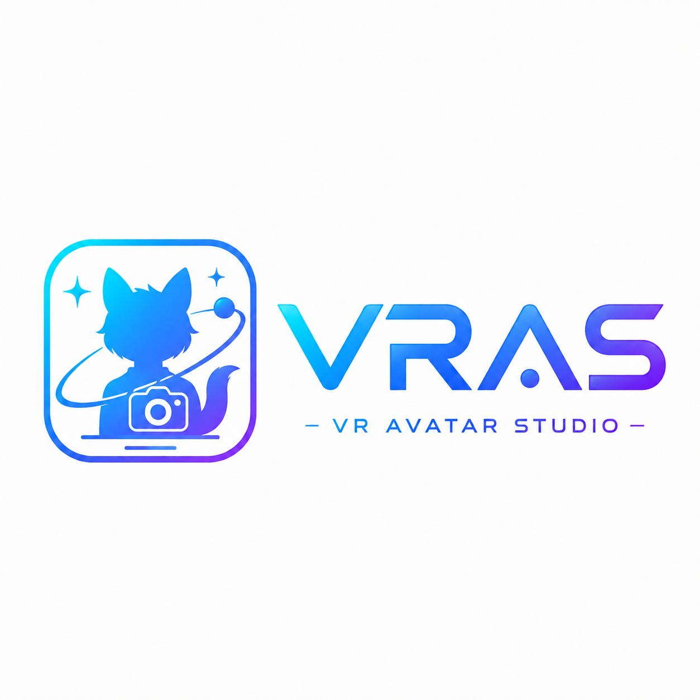

【特別版】名前を決めました。VRAS - VR AVATAR STUDIO -
これまで「VR Avatar Viewer」として開発してきたアプリの正式名称を、今後は VRAS - VR AVATAR STUDIO - とします。略称は VRAS です。

Viewerから、Studioへ
開発当初の中心は、アバターを読み込み、見ることでした。けれど、これまで積み上げてきた機能によって、アプリの役割は少しずつ広がっています。
- アバターを編集する
- 表情・体形・ポーズを調整する
- アニメーションを再生・編集する
- カメラ撮影やエフェクトを楽しむ
- 背景を整え、スタジオらしい表現をつくる
- VRで自分がアバターとして動く
- VAB / VBG / VCIなどの周辺フォーマットを扱う
これらは「今日まとめて実装した新機能」という意味ではありません。これまで広がってきた現在のアプリの姿を振り返ると、「見るためのViewer」よりも、「調整し、動かし、つくり、撮るためのStudio」という言葉のほうが、役割を自然に表せるようになりました。
Viewerから、Studioへ。名前もようやく追いつきました。
VRASという名前
正式表記は VRAS - VR AVATAR STUDIO -。普段は短く VRAS と呼びます。
「Avatar Studio」には、ひとつの使い方に限定せず、好きなアバターを自分らしく整え、さまざまな表現を試せる場所にしていきたい、という方向性を込めました。従来の閲覧体験もその土台として残り、編集、アニメーション、撮影、VR体験などへつながっていきます。
今回のロゴについて
今回掲載するロゴは、現時点の仮デザインです。狐耳の人物シルエット、カメラ、軌道のモチーフと、青から紫へつながる VRAS の文字、その下の VR AVATAR STUDIO で構成しています。

名称は VRAS として進めますが、ロゴの形や細部は、実際にさまざまな場所で使いながら今後ブラッシュアップし、変更する可能性があります。
まとめ
「VR Avatar Viewer」として始まったアプリは、見るだけでなく、アバターを編集し、動かし、撮影し、VRで体験するための場所へ広がってきました。その現在地に合わせた新しい正式名称が、VRAS - VR AVATAR STUDIO - です。
まずは名前が決まったことをご報告する特別版でした。これからも、Studioという名前に似合う体験へ育てていきます。